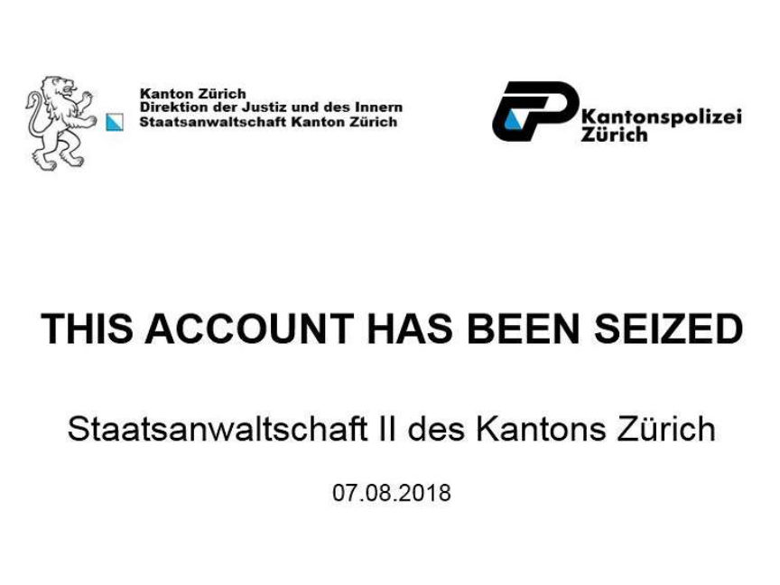
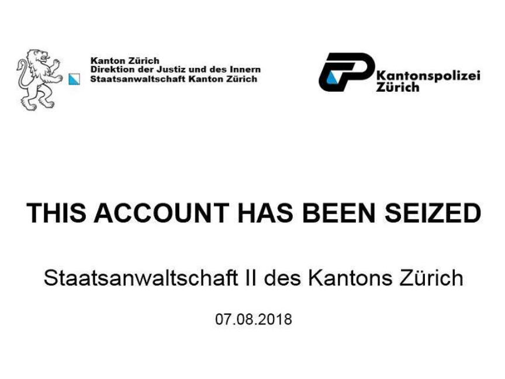

Zurich Police Bust Dream Vendor "Happy-Olaf"
~2 min read | Published on 2018-08-09, tagged Darkweb-Vendor, Dream-Market, Drug-Bust using 464 words.
The Zurich law enforcement announced the arrest of several darknet vendors including Happy-Olaf and two other “top 10 darknet shops for Swiss darknet buyers.”
On Tuesday, the Zurich Public Prosecutor’s Office announced the arrest of five individuals suspected of involvement in darkweb drug trafficking operations in Zurich. According to the announcement, the accounts belonged to three of the ten largest darkweb drug vendors targeting Swiss customers.
The Investigation
Happy-Olaf was one of the accounts seized by Zurich law enforcement. Along with the accounts, the police also seized several kilograms of MDMA and an unknown number of ecstasy pills.
The Cybercrime Department of the Public Prosecutor’s Office worked alongside the cantonal police throughout the investigation in an effort to identify the vendors and—as far as the public knows—that collaboration paid off. This, according to the announcement, was Zurich’s first major success in an investigation into darkweb vendors.

The Annoucement
Below is a roughly translated version of the press release found on the pubic rosecutor’s website.
The Zurich law enforcement authorities have succeeded in identifying a group of offenders, which are said to have operated drug trafficking on a large scale via Darknet sales platforms. As part of the very complex investigation of the Public Prosecutor’s Office II in close cooperation with various special services of the Cantonal Police of Zurich, 5 people were arrested and transferred to custody on 6 August 2018. The prosecution has seized the illegal offers and the associated user accounts and thus shut down.
The public prosecutor’s office in Zurich, in close cooperation with the cantonal police of Zurich, has succeeded in striking down the darknet narcotics trade. As part of a very complex investigation of the prosecutor II, Division D, Cybercrime, and specialists of the Cantonal police of Zurich from the fields of digital forensics and special electronics and the professional services narcotics and cybercrime five people were arrested. They are under urgent suspicion of having operated narcotics sales in the multi-kilo range on various Darknet sales platforms. At the request of the Public Prosecutor’s Office on 6 August 2018, the Compulsory Measures Court ordered remand for all five of the accused. The prosecution has confiscated three user accounts, through which the sale of the narcotics was handled, thus paralyzing the top-selling seller as well as two other Top 10 shops of the Swiss narcotics domestic trade in Darknet. In addition, the cantonal police of Zurich ensured 4 kilograms of cocaine and more than one kilogram of MDMA and ecstasy.
For the first time, the Zurich law enforcement authorities have succeeded in identifying and localizing a group of offenders based on search actions in the darknet in this cyber-narcotics campaign. Fighting such offenses is very important because the Internet and Darknet are not legally free. However, the investigations in this area are very complex and require the very close cooperation of various specialists.
On Tuesday, the Zurich Public Prosecutor’s Office announced the arrest of five individuals suspected of involvement in darkweb drug trafficking operations in Zurich. According to the announcement, the accounts belonged to three of the ten largest darkweb drug vendors targeting Swiss customers.
The Investigation
Happy-Olaf was one of the accounts seized by Zurich law enforcement. Along with the accounts, the police also seized several kilograms of MDMA and an unknown number of ecstasy pills.
The Cybercrime Department of the Public Prosecutor’s Office worked alongside the cantonal police throughout the investigation in an effort to identify the vendors and—as far as the public knows—that collaboration paid off. This, according to the announcement, was Zurich’s first major success in an investigation into darkweb vendors.

Happy-Olaf Seizure Banner on Dream
The Annoucement
Below is a roughly translated version of the press release found on the pubic rosecutor’s website.
The Zurich law enforcement authorities have succeeded in identifying a group of offenders, which are said to have operated drug trafficking on a large scale via Darknet sales platforms. As part of the very complex investigation of the Public Prosecutor’s Office II in close cooperation with various special services of the Cantonal Police of Zurich, 5 people were arrested and transferred to custody on 6 August 2018. The prosecution has seized the illegal offers and the associated user accounts and thus shut down.
The public prosecutor’s office in Zurich, in close cooperation with the cantonal police of Zurich, has succeeded in striking down the darknet narcotics trade. As part of a very complex investigation of the prosecutor II, Division D, Cybercrime, and specialists of the Cantonal police of Zurich from the fields of digital forensics and special electronics and the professional services narcotics and cybercrime five people were arrested. They are under urgent suspicion of having operated narcotics sales in the multi-kilo range on various Darknet sales platforms. At the request of the Public Prosecutor’s Office on 6 August 2018, the Compulsory Measures Court ordered remand for all five of the accused. The prosecution has confiscated three user accounts, through which the sale of the narcotics was handled, thus paralyzing the top-selling seller as well as two other Top 10 shops of the Swiss narcotics domestic trade in Darknet. In addition, the cantonal police of Zurich ensured 4 kilograms of cocaine and more than one kilogram of MDMA and ecstasy.
For the first time, the Zurich law enforcement authorities have succeeded in identifying and localizing a group of offenders based on search actions in the darknet in this cyber-narcotics campaign. Fighting such offenses is very important because the Internet and Darknet are not legally free. However, the investigations in this area are very complex and require the very close cooperation of various specialists.